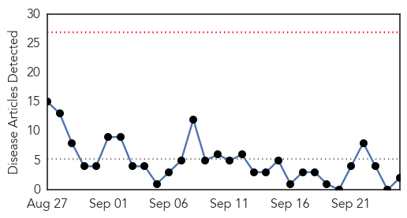
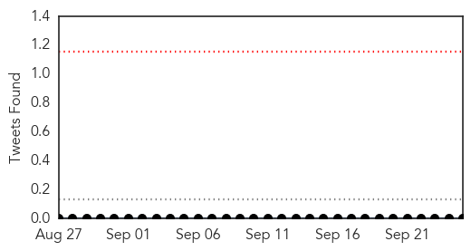
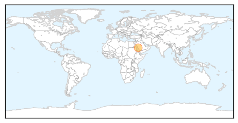
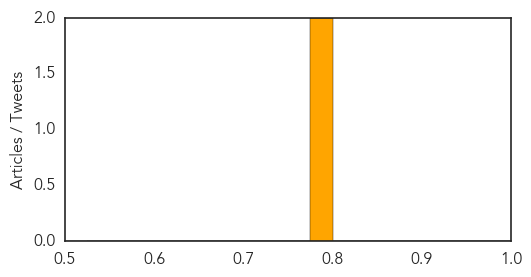
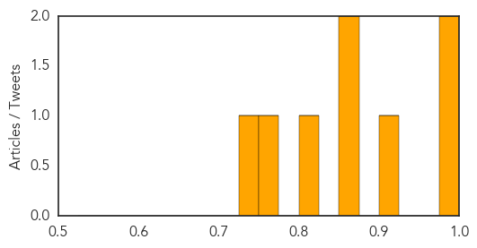

MERS
30-Day Web Trend
0 alerts, 0 warnings

30-Day Twitter Trend
0 alerts, 0 warnings

Article Locations
Article Confidences
Top Articles:
Top Tweets:
-
No tweets found for Sep 25, 2015
West Nile Virus
30-Day Web Trend
30-Day Twitter Trend
0 alerts, 0 warnings

Article Locations

Article Confidences
Top Articles:
- 0.989
- WFMJ.com News weather sports for Youngstown-Warren Ohio
- 0.989
- Oakland County woman who died of West Nile Virus identified
- 0.903
- Five Human Cases Of West Nile Reported In Connecticut
- 0.873
- West Nile Virus kills Oakland County woman
- 0.855
- Michigan has first West Nile virus death
- 0.803
- Oakland County Woman Dies Of West Nile Virus « CBS Detroit
- 0.757
- Fewer mosquitoes in Maine, New Hampshire
- 0.727
- 5 Human Cases of West Nile Virus Reported in Connecticut
Top Tweets:
-
No tweets found for Sep 25, 2015